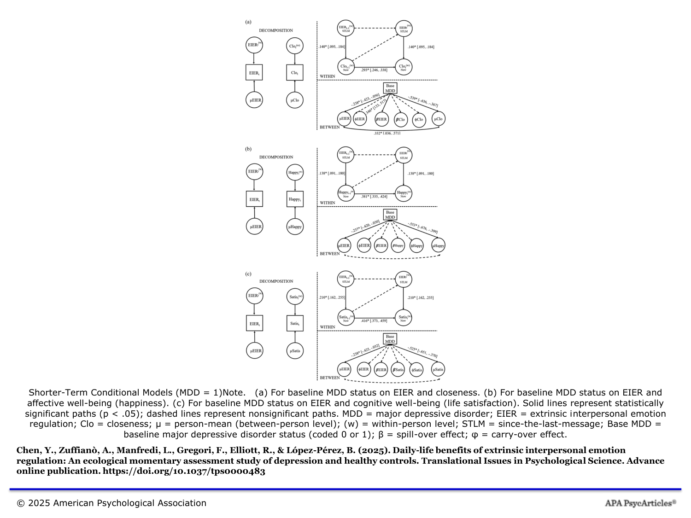
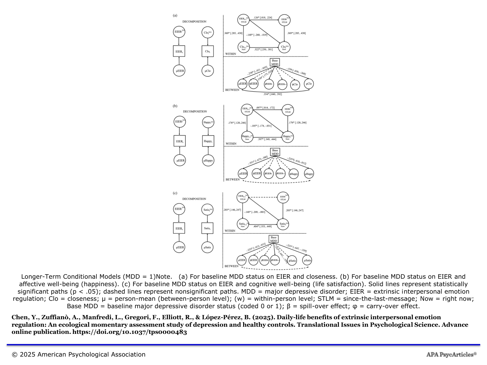

2025
First Author
Translational Issues in Psychological Science
Daily-life benefits of extrinsic interpersonal emotion regulation: An ecological momentary assessment study of depression and healthy controls
Translational Issues in Psychological Science
Using ecological momentary assessment over 28 days, this study tracked 52 adults (26 with depression, 26 healthy controls) as they tried to comfort or uplift others in daily life. Although people with depression engaged less in this social regulation, when they did they gained greater boosts to closeness and momentary happiness than healthy controls — yet also experienced stronger emotional costs afterward, with reduced life satisfaction at later time points. The findings highlight both the promise and the complexity of social emotion regulation as a clinical target.

